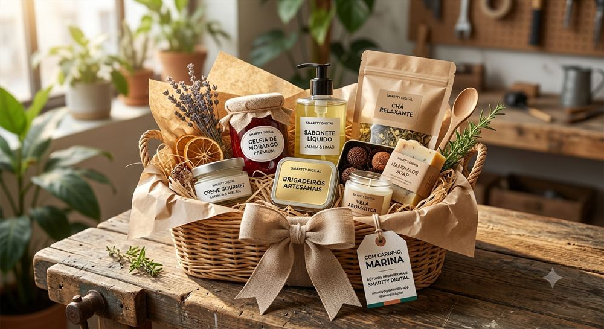

Rótulo bonito nem sempre é o rótulo certo. Já vimos gente escolher um material lindo — mas que não combinava com o produto — e descobrir depois que precisava refazer tudo. A escolha do material muda a durabilidade, a sensação ao toque e até quanto o produto parece valer na prateleira.
Couchê ou BOPP — a primeira decisão
O Couchê é um papel de alta qualidade, com ótima reprodução de cores e mais econômico — mas não é resistente à água, então só serve pra produtos sem contato com umidade, óleo ou geladeira. Pra praticamente tudo que uma marca de verdade vende (cosméticos, alimentos, velas, bebidas), o BOPP é o material certo: um filme plástico resistente a água e óleo, com cola acrílica que não fica quebradiça nem solta com o tempo. Já explicamos em detalhe por que isso importa pra produtos que vão à geladeira.
Os 6 tipos de BOPP — qual escolher
Dentro do BOPP, a escolha muda conforme o efeito que você quer pro seu produto:
- Fosco — toque aveludado e antirreflexo, combina com cosmética natural
- Brilho — cores vivas e alto impacto visual, combina com alimentos e doces
- Transparente — efeito "sem rótulo", deixa o produto aparecer através do vidro, combina com óleos e perfumaria
- Metalizado — brilho prateado premium, combina com edições especiais
- Gold — dourado sofisticado, combina com presentes e datas comemorativas
- Perolizado — toque perolado e delicado, combina com linhas femininas
Todos os seis são impressos com tecnologia de impressão digital a laser e vêm com cola acrílica — resistentes a água e óleo por padrão, independente do tipo escolhido.
Veja a diferença na prática
Cada material muda completamente a sensação do produto na mão do cliente:



Não dá pra saber de longe qual combina melhor com o seu produto sem ver ele de perto. É por isso que a Manu, nossa consultora, te ajuda a escolher com base no que você está produzindo — sem enrolação e sem termos técnicos.
Ainda em dúvida sobre qual material escolher?
Fale com a Manu no WhatsApp e descubra o material ideal pro seu produto — ela te orienta 24 horas por dia, todos os dias.
💬 Falar com a ManuSeja qual for o material escolhido, você não precisa comprar milhares de unidades pra testar: a tiragem começa em 50 unidades por modelo. E se seu produto é cosmético, veja também as soluções específicas pra rótulos de cosméticos artesanais.
← Voltar pro blog